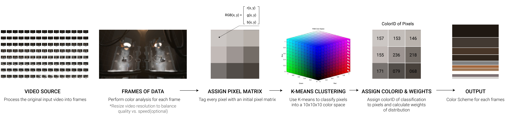
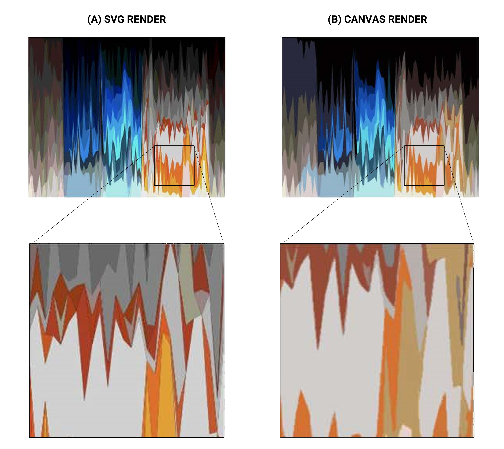

Streaming Video Data: A data-visualization method of colors in film
Color design plays an instrumental role in film arts and appreciation. This project developed a data-visualization method that analyzed and represented sequential color distribution of films. In addition, I also provided two approaches to interpreting data visualization images using manual and machine learning procedures. More exploration methods will be left to users.
DESIGN OVERVIEW
INTRODUCTION
Color is part of the language of cinema. we use it to express different emotions and feelings, just as we use light and shadow to symbolize the conflict between life and death.
——Vittorio Storaro
Lewis Bond's short film Color In Storytelling provides a practical analysis of how color casts can enhance storytelling in film. He argues that we often do not realize that color can affect our emotional, psychological and even physical sensations. Color can convey meaningful information in film narrative and appreciation, such as eliciting psychological responses from the audience, focusing on key characters, setting the tone of the film, expressing character traits, or demonstrating change and rhythm in the story.
However, because film appreciation and viewing experiences are linear in action, we usually have to rely on memory and intuition to perceive the distribution and changes of color in a film. This project developed a data visualization interface which provides a macro idea for analyzing video data from the aspect of color.By inputting video clips into the program, film connoisseurs can obtain a frame-by-frame overview of color profiles and changing patterns, allowing them to draw analytical conclusions from observations and interpretations.
PROCESS
01 | Color Analysis of videos
02 | Data visualization
DECODE
Manual
ML
APPLICATION